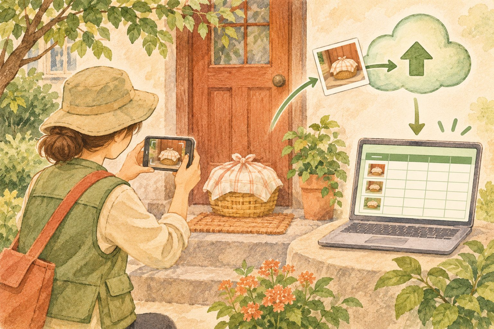
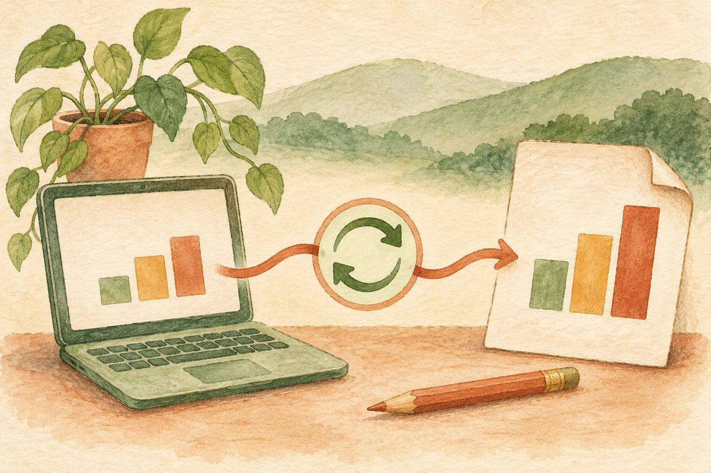

받은 뒤에 고치기보다,
처음부터 잘 받으세요
설문지의 값어치는 응답을 받은 뒤에 드러납니다. 질문에 규칙을 정해 두면, 자료를 손으로 다듬는 일이 줄어듭니다.
나이에 ‘서른셋’이라고 쓰거나, 전화번호에 점과 띄어쓰기를 섞으면 합계·평균·정렬을 하기 전에 하나씩 고쳐야 합니다. 이런 정리 작업을 ‘전처리’라고 합니다. 구글 설문지의 응답 확인은 정해 둔 조건에 맞는 답만 받도록 도와줍니다.
“데이터가 정리되어야 돼요.
‘전처리’라는 단어가 있는데.”강의에서 함께 짚은 핵심
나이 응답: 33 / 서른셋 / 33세
같은 나이도 서로 다른 값입니다. 평균을 구하기 전에 숫자만 남기도록 정리해야 합니다.
단답형과 장문형, 먼저 용도를 정하세요
짧고 일정한 답은 단답형
나이, 연락처, 이메일처럼 한 줄로 받는 질문에 알맞습니다. 숫자·텍스트·길이·정규 표현식 조건을 적용할 수 있습니다.
의견을 충분히 받으려면 장문형
프로그램 소감, 개선 의견처럼 설명이 필요한 질문에 알맞습니다. 글자 수를 정하는 길이 조건이나 정규 표현식 조건을 사용할 수 있습니다.
질문 오른쪽 점 세 개에서 시작합니다
단답형 질문을 선택한 다음 점 세 개(⋮) › 응답 확인을 누릅니다. 숫자는 예를 들어 0~120 사이로, 텍스트는 이메일 형식 등으로 설정합니다. 길이는 최소·최대 글자 수, 정규 표현식은 복잡한 글자 규칙에 사용합니다. 질문 유형에 따라 선택할 수 있는 조건이 다릅니다.
질문 이름은 ‘나이’, 유형은 ‘단답형’
숫자 한 개를 받을 질문을 만듭니다. 질문 설명에 ‘숫자만 적어 주세요’라고 안내해 주세요.
정규 표현식은
외우지 말고 부탁하세요
‘010-숫자 네 자리-숫자 네 자리’처럼 복잡한 규칙도, 패턴 한 줄로 정할 수 있습니다.
정규 표현식은 글자가 어떤 모양이어야 하는지 적는 규칙입니다. 단답형 질문의 응답 확인 › 정규 표현식 › 일치를 고른 뒤 패턴을 넣습니다. 검색해서 찾을 수도 있고, 생성형 AI에게 만들어 달라고 요청할 수도 있습니다.
다만 검색 결과나 AI의 답을 그대로 믿지는 마세요. 느슨한 패턴은 010이 아닌 번호도 통과시킬 수 있습니다. 앞자리가 반드시 010인지, 하이픈이 필요한지를 분명히 요청하고 실제 입력으로 확인해 주세요.
^010-\d{4}-\d{4}$위 패턴은 하이픈 두 개가 있는 010 휴대전화 형식을 검사합니다.
^010-010-으로 시작
\d숫자 한 자리
{4}앞 기호를 네 번
$여기서 끝
숫자 기호 \d의 역슬래시(\)는 글꼴에 따라 원화 표시처럼 보일 수 있습니다. 낯설어 보여도 기호를 바꾸지 말고 그대로 붙여 넣으세요.
답에 따라 다음 길을
다르게 안내할 수 있습니다
질문 묶음인 ‘섹션’을 만든 뒤, 선택한 답에 맞는 섹션으로 이동하도록 설정합니다.
- 오른쪽 도구에서 섹션 추가를 눌러 동의 화면과 다음 질문을 나눕니다.
- 객관식 또는 드롭다운 질문을 만듭니다.
- 질문 오른쪽 점 세 개 › 답변을 기준으로 섹션 이동을 켭니다.
- 답변 옆에서 각각 이동할 섹션을 지정합니다. 각 섹션 아래의 다음 이동 위치도 확인합니다.
강의에서는 개인정보 동의에서 ‘아니오’를 고르면 동의 화면으로 돌아오게 하는 예를 살펴보았습니다. ‘예’는 신청 내용 섹션으로, ‘아니오’는 동의 섹션으로 보내면 됩니다.
게시한 다음,
마감 조건을 정해 두세요
질문을 다 만들었다면 게시를 눌러야 응답을 받을 수 있습니다. 응답할 수 있는 대상을 확인하고 게시한 뒤, 오른쪽 위 게시됨에서 응답 수집 설정을 엽니다. 응답 수집 중 › 마감 날짜 또는 응답 수 제한 설정에서 날짜·시간이나 응답 수를 지정하고 저장합니다. 화면의 문구는 사용 환경에 따라 조금 다를 수 있습니다.
신청 기간이 정해져 있다면
마감 날짜와 시간을 지정합니다. 그 시각이 되면 새 응답을 받지 않도록 닫힙니다. 마감 후 보일 안내문도 미리 적어 주세요.
정해진 수만큼 받는다면
응답 수 제한을 지정합니다. 기존 응답이 있다면 현재 받은 수보다 큰 값으로 정해야 합니다. 선착순 신청을 수시로 확인하는 수고를 줄일 수 있습니다.
마감 날짜와 시간을 설정하세요.
‘주말까지’라는 표현만 쓰지 말고, 신청 안내와 실제 마감 시각이 일치하는지도 확인하세요.
카톡으로 흩어진 사진,
설문지로 모아 보세요
봉사자가 반찬 배송 사진을 하나씩 보내는 대신, 세 문항의 설문지로 보고하게 할 수 있습니다.
누가 보고했는지 받습니다.
방문 당시 상황을 고릅니다.
배송 사진을 첨부합니다.
질문 유형을 파일 업로드로 바꾸고, 특정 파일 형식만 허용을 켠 뒤 이미지를 선택합니다. 응답자가 사진을 올리려면 구글 계정에 로그인되어 있어야 합니다. 파일 형식을 제한하면 필요한 종류의 자료만 받을 수 있습니다.

응답은 시트에, 원본 사진은 드라이브에
설문지의 응답 탭 › 스프레드시트에 연결에서 새 시트를 만들거나 기존 시트를 선택합니다. 연결해 두면 응답이 시간과 함께 한 줄씩 쌓입니다. 파일 업로드 원본은 내 드라이브에 설문지 이름으로 만들어진 폴더에 모이고, 응답 시트에서는 해당 파일 링크를 열어 확인합니다.
“자기가 사진 찍으면 선생님한테 바로 와서
보고서가 바로 딱 생기게.”강의에서 그려 본, 다음 단계의 업무 흐름
여기서 한 단계 더 나아가면 시트에서 날짜나 사람을 선택해 사진이 들어간 보고서를 만들 수 있습니다. 다만 설문지를 시트에 연결하는 것만으로 보고서가 자동 생성되지는 않습니다. 자료를 모으는 단계와 보고서 양식·자동화를 만드는 단계를 구분해서 생각해 주세요.
가상 파일을 골라 결과를 확인하세요. 파일은 업로드되지 않습니다.
현재는 이미지 파일만 받도록 설정되어 있습니다.
HWP를 받아야 한다면 ‘문서’ 형식 제한에 포함되지 않으므로 형식 제한을 끄고 질문 설명에 HWP 제출을 안내할 수 있습니다. 양식을 고치지 않고 결과물을 확인하는 목적이라면 PDF로 받아도 됩니다. PDF 형식 자체가 편집을 완전히 막아 주는 것은 아닙니다.
차트는 다시 만들지 말고,
문서에 연결해 두세요
설문지의 응답 › 요약에서 차트 오른쪽 위의 차트 복사를 누릅니다. 구글 문서에 붙여 넣으면 원본과 연결된 차트를 사용할 수 있습니다. 새 응답이 늘어난 뒤 문서에서 차트의 업데이트를 누르면 최신 내용이 반영됩니다.
차트마다 따로 업데이트해야 합니다. 여러 차트를 붙였다면 하나씩 확인해 주세요. 연결된 차트를 갱신하려면 해당 문서와 원본 설문지에 필요한 편집 권한이 있어야 합니다.

학습용 가상 만족도 응답입니다. 먼저 왼쪽에서 응답을 추가하고, 오른쪽에서 업데이트해 주세요.
설문지 응답 요약
총 5개의 가상 응답
구글 문서에 붙인 차트
현재 원본과 같은 내용입니다.
더 나아가기: 응답을 PDF로
시트에 모인 답과 사진을 보고서 양식에 채운 뒤 PDF로 저장하는 흐름도 만들 수 있습니다. 이때는 보고서 양식과 앱스 스크립트 같은 자동화를 별도로 준비해야 합니다. 먼저 설문지로 자료를 일정하게 받는 것부터 익힌 뒤, 반복되는 문서 작업을 다음 자동화 과제로 정해 보세요.
기능 확인: 구글 공식 도움말 · 응답 차트 복사와 업데이트
설문지는 퀴즈로도,
복습 도구로도 쓸 수 있습니다
설정 › 퀴즈로 만들기를 켜면 질문에 정답과 점수를 지정할 수 있습니다. 질문 아래 정답 설정에서 맞는 답을 선택하고 배점을 정합니다. 필요한 경우 정답 해설도 넣고, 점수를 언제 공개할지 확인해 주세요. 우선 객관식 한 문항으로 시험해 보면 이해하기 쉽습니다.
아래 세 문제로 오늘 내용을 확인해 보세요. 답을 고르고 ‘정답과 해설 확인’을 누르시면 됩니다.
기능 확인: 구글 공식 도움말 · 퀴즈 만들기와 채점
자주 묻는 질문
수업 중 함께 나눈 질문입니다. 궁금한 항목을 누르면 답변이 펼쳐집니다.
차트를 문서에 붙였는데 응답이 늘었어요.
문서에 붙인 차트의 업데이트 버튼을 누르면 새 응답이 반영됩니다. 차트가 여러 개라면 차트마다 따로 눌러야 합니다.
같은 사람이 두 번 신청한 것을 걸러낼 수 있나요?
응답 시트에서 함수로 이름이 겹치면 ‘중복’을 표시하고, 조건부 서식으로 색을 입힐 수 있습니다. 다만 동명이인이 있을 수 있으니 이름이 같다는 이유만으로 삭제하지 마세요. 같은 사람의 중복 신청을 신청 단계에서 막으려면 식별 기준을 정하고 앱스 스크립트 같은 자동화를 설계해야 합니다. ‘응답 1회로 제한’은 구글 계정 단위의 제한이므로 실제 사람 한 명당 한 번을 보장하지 않습니다.
파일 업로드 질문을 넣었더니 로그인하라는 안내가 떠요.
정상입니다. 파일을 올리려면 응답자가 구글 계정에 로그인되어 있어야 합니다. 설문지 제작자의 계정이 아니라, 답하는 분의 계정으로 로그인해야 합니다.
구글 아이디가 없는 분은 사진을 못 올리나요?
네. 구글 설문지의 파일 업로드는 로그인이 필요합니다. 안드로이드 휴대폰은 이미 구글 계정에 로그인해 사용하는 경우가 많지만, 모든 분이 그런 것은 아닙니다. 실제 응답 대상의 로그인 상태를 확인하고 계정이 없는 분의 제출 방법도 안내해 주세요.
파일 형식을 ‘문서’로 제한했더니 HWP가 안 올라가요.
‘문서’ 형식에는 HWP가 포함되지 않습니다. HWP를 받으려면 형식 제한을 끄세요. 제출 문서의 모양을 유지해서 확인하려는 목적이라면 PDF만 받는 방법도 있습니다. PDF는 편집을 완전히 차단하는 형식은 아니므로, 내용 변경 방지가 꼭 필요하다면 별도의 보호 방법을 검토해야 합니다.
지금 쓰는 질문 하나부터
바꿔 보세요
한 번에 모두 바꾸실 필요는 없습니다. 현재 쓰는 만족도 조사나 신청서 하나를 골라 아래 순서로 점검해 보세요.
6개 중 0개를 확인했습니다.
체크 상태는 이 브라우저에만 저장됩니다. 연습에 입력한 나이·전화번호는 저장하거나 전송하지 않습니다.
질문을 잘 설계하면 자료가 정리되어 들어오고, 다음 업무가 가벼워집니다.
잘 묻는 일이,
정리하는 시간을 줄여 줍니다.